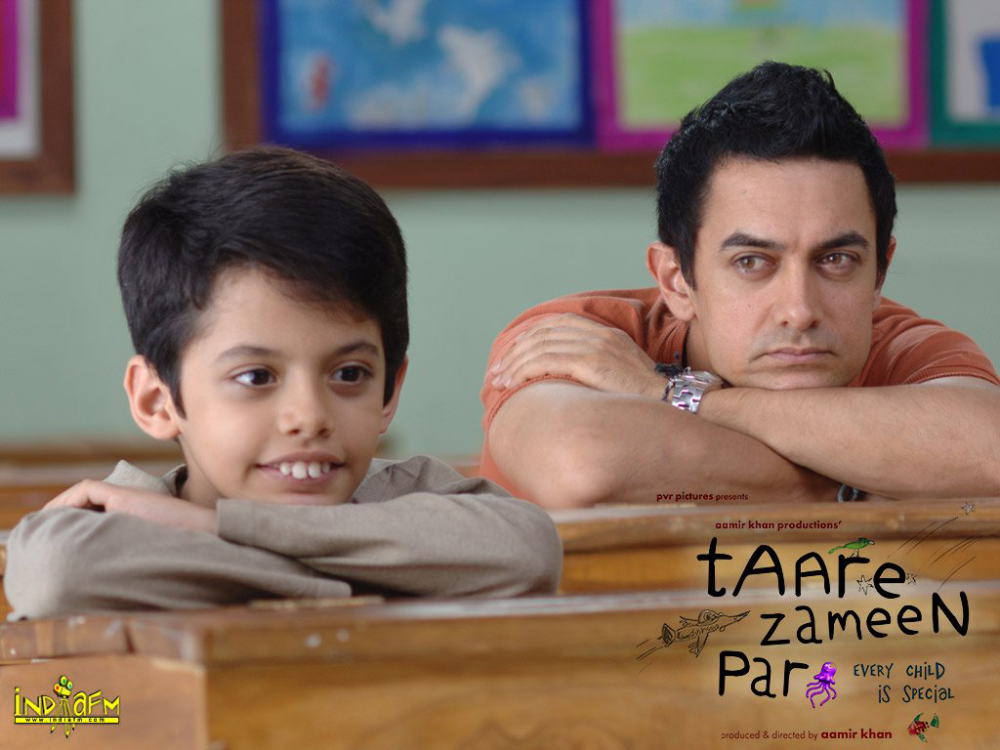
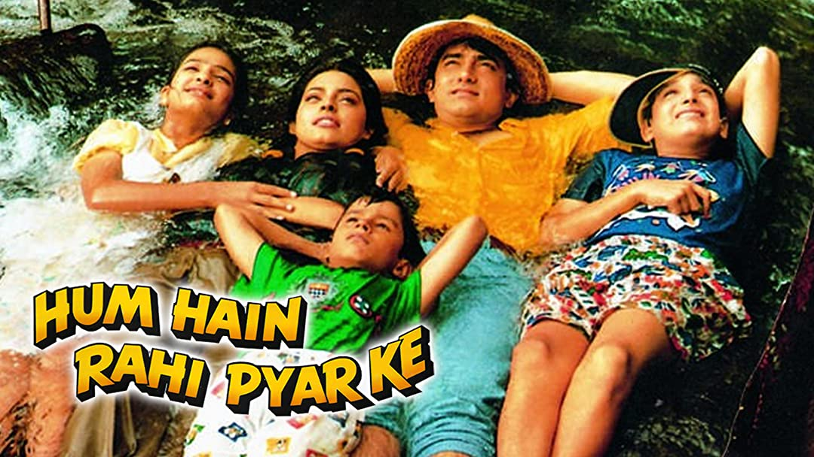

Duplicate Full Movie
Bablu (Shah Rukh Khan), an aspiring chef, works in a hotel where Sonia Kapoor,(Juhi) works with him as banquet manager at the restaurant. His look-alike Manu (Shah Rukh Khan), a gangster, robs a bank along with his friend (Gulshan Grover) but gets caught. He comes out of prison and discovers that his cohort has double-crossed him. He murders his partner and escapes from the scene of the crime...without the money. Bablu stumbles on the money and keeps it. Manu's lover Lily (Sonali Bendre) mistakes Bablu to be Manu and spirits him away. Manu takes shelter in Bablu's house and realizes that he can use their resemblance to his advantage.Then starts the fun-ride with Babloo constantly being mistaken for Manu. With both Sonia and Lily after him, Manu furious and the Law taking him to be Manu, Babloo faces a tough time. And then, Manu kidnaps Bibi (Farida Jalal) Babloo's mother and holds her hostage.
Watch Now3 Idiots Full Movie
3 Idiots is a comedy of ideas that is as provocative as funny, as wildly entertaining as insightful. A laugh-riot that talks about the most important of human pursuits: self-actualization. Two friends (Madhavan and Sharman Joshi) embark on a quest for a lost buddy. On this journey, they encounter a long forgotten bet, a wedding they must crash and a funeral that goes impossibly out of control. As they make their way through the perilous landscape, another journey begins: their inner journey through memory lane and the story of their friend – the irrepressible free thinker Rancho (Aamir Khan), who in his unique way, touched and changed their lives. It's a story of their hostel days that swings between Rancho's romance with the spirited Pia (Kareena Kapoor), and his clash with an oppressive mentor, Viru Sahastrabudhhe (Boman Irani). And then one day, suddenly, Rancho vanishes.... Who was he? Where did he come from? Why did he leave? The friend who influenced and inspired them to think creatively and independently, even as the conformist world called them three idiots. Where is the original idiot now? Finally in misty mountains of unparalleled beauty, the friends find the key to the secret.
 Watch Now
Watch Now
Taare Zameen Par Full Movie
Ishaan Nandkishore Awasthi (Darsheel Safary) is an eight-year old boy who hates school and studies. He fails miserably in his tests and exams and just cannot get anything right in his class. To make matters worse, he lacks motor coordination skills and cannot even catch a ball coming from a distance. Alternatively, he is more interested in things like colors, fish, dogs and kites that are of least concern to adults. Home has nothing better to offer. Parents keep taunting him about his inability rather than helping him. Brother Yohaan (Sachet Engineer) is a scholar and athlete, a fact that Ishaan is constantly reminded of. Humiliated and frustrated, Ishaan bunks schools for getting low grades and keeps them to himself. On discovering this, his parents decide to send him to a boarding school on the context of getting disciplined. Boarding school does nothing better to help Ishaan. Therein, he is befriended by one of the best students in the class, Rajan Damodran (Tanay Chheda). This leads Ishaan into a state of fear and depression, adding to the already traumatized separation. The movie now takes a twist with the entry of new temporary art teacher Ram Shankar Nikumbh (Aamir Khan) at the boarding school. Nikumbh Sir breaks the rules of "how things are done" to allow students to learn with joy and optimism. His technique of teaching students using thoughts, dreams and imaginations becomes successful with all students, except Ishaan. Nikumbh notices Ishaan is unhappy and decides to discover the reason. He reviews all past works of Ishaan and concludes all failures to be reflective of dyslexia. Nikumbh even meets Ishaan's parents and informs them that Ishaan is a bright child different from other students in the class. Back in class, Nikumbh highlights the topic of dyslexia in class and mentions some famous people who were dyslexic, such as Albert Einstein, Leonardo Di Vinci, Walt Disney, Agatha Christie, Thomas Edison, Pablo Picasso and actor Abhishek Bachchan. With the permission of school principal (M.K. Raina), Nikumbh sets to tutor Ishaan. Using specific methods and techniques, Ishaan starts developing interest in language and mathematical skills. Eventually, grades start to improve. An art fair is organized for students and teachers alike by Nikumbh at the end of the year. As expected, Ishaan wins the contest while his teacher, Nikumbh is declared the runner-up. Ishaan's parents are surprised at the drastic improvement in their child's grades and realize their shortcomings.
 Watch NowAkele Hum Akele Tum Full Movie
An estranged couple battle for the custody of their only son. Rohit Kumar (Aamir Khan) is an aspirant playback singer while Kiran (Manisha Koirala) is a classical singer-in-training, but inside aims to be some thing like Rohit. They meet, relate to each other's sentiments and fall in love. But when Kiran's parents oppose their marriage, they decide to lead a separate life. However, after their marriage, Kiran's ambitions take a back seat as she feels suppressed by her household responsibilities and her child to look after. Time fails to abate Kiran's frustration until she decides to leave Rohit and start a new life all over again. Now a loner, Rohit is forced to look after both his son and his falling career on his own. After some obvious teething troubles, Rohit succeeds in creating a separate world of their own with Sonu, his son. Meanwhile, Kiran incidentally becomes a huge film star. When her attempts to reconcile with Rohit backfire, she decides to call the marriage off and also files a case demanding Sonu's custody. But Rohit is not giving up without a battle for his rights as a father.
Watch NowChalte Chalte Full Movie
A man pursues a woman who is already engaged and eventually gets married to her. Differences between the two lead to a bitter separation that threatens to destroy their relationship forever. Raj and Priya come from two different strata of society. While Raj owns a small-time transport business and belongs to the economically middle class section of society, Priya belongs to the affluent class and is on the road to becoming a famous fashion designer. But when a chance encounter brings them together, they are drawn towards each other. Raj has fallen for Priya but Priya is already engaged to marry her childhood friend Sameer. Raj follows her all the way to Greece to woo her. During the journey Priya realizes that Raj is her true soulmate and decides to marry him. But after a year of their marriage, things are not quite rosy as the once-lovestruck couple faces the harsh realities of marriage. Raj runs into financial problems and Priya borrows money from Sameer without telling Raj. When Raj finds out, all hell breaks loose and in an angry fit he accuses Priya of infidelity. This is too much to take for Priya and she leaves their home. Will they reunite or will the discord never be set straight?
Watch NowHum Hain Rahi Pyar Kai Full movie
Bachelor Rahul Malhotra gets news that his sister and her husband meet with an accident resulting in their death which made him quit his studies to take care of 3 of his sister's children, 2 nephews and 1 niece. Meanwhile the family's lawyer briefed him about the children's inheritance which includes a garment factory but until the children come of age he must take up the responsibility of maintaining this factory. His attempts to level business tactics and bringing up the children only lead to frustration especially when no maid servant is prepared to work at his home since they are subjected to physical abuse in the hands of the 3 children while his challenge increases with the factory's "Japanese" trained manager, Bhagwati Prasad Mishra. Meanwhile the children manage to run-away to a fair only to meet up with Vaijanti Iyer a young woman who run-away from home to avoid marrying the man her dad chooses for her. The children then sneaks Vaijanti into their home; when all is revealed to Rahul he decides to make Vaijanti the children's governess but Rahul faces a major challenge of a lifetime when an admirer of his, Maya is willing to liquidate his business using her father's Bijlani wealth since he refuses to marry her.
 Watch NowBaahubali 2 The Conclusion Full Movie
The film opens with a brief prologue from the previous movie for those who have not seen it: A severely injured woman who seems to be on the run from assailants, prays to God to save the small child she is carrying. That is when Sanga (Rohini) and her husband, part of a tribe living in the province of the kingdom, save a drowning infant, not knowing the background of the infant, or what the future holds for him. He grows up as Shivudu, a free-spirit wanting to explore the mountains and in the process learns of his roots from the kingdom, and his parents and then realizes the whole purpose of his life and ends up confronting the mighty Bhallaladeva for his rightful place. The Past At the conclusion of the big battle from the last movie, Amarendra Bahubali (Prabhas) having defeated Kalakeyas, is declared King by the Mother Queen Sivagami (Ramya Krishnan) over Bhallaladeva (Rana Daggubatti), who instead is given charge of the armies as a commander. There is a tradition in the kingdom that the daughter-in-law of the royal family is required to perform a sacrifice every so often by carrying hot coals in a container above her head and walk around the temple to ward off evil spirits. Sivagami carries this out as she is the only daughter-in-law of the family. Amarendra Baahubali proves his might again as he stops a disgruntled elephants that escaped its harness and was charging in the direction of Sivagami. The ceremony was carried out because Amarendra Baahubali was to ascend the throne as King. Declaring Amarendra Baahubali King does not ease the tension between the two step-brothers and rivals as Bhallaladeva considers himself the rightful King, being the biological son of the Mother Queen. As we found out in the previous movie, Amarendra Bahubali is the son of the old King, and his mother died giving birth to him. The Kings brother was seen as too weak and cowardly to take over the throne, so his wife Sivagami, sister-in-law of the King had the conspirators to the throne killed and assumed the throne herself. She was to hold power until one of the two princes proved he was capable enough of taking over the responsibility of the throne. Since Amarendra Baahubali was to take over the throne, Sivagami orders him to travel throughout the kingdom and surrounding areas and become familiar with the people and various smaller kingdoms that existed within the land so that he understood the land and the state of the people he would be ruling over. She also sends Katappa (Sathyaraj) along with him as a companion and bodyguard. In the meanwhile, the Sivagami would prepare for his coronation and search for a suitable bride. During their travels, Amarendra Baahubali and Katappa come across a village that is being attacked by bandits. There they see Princess Devasena (The woman enslaved in the royal court yard, collecting small pieces of wood from trees in a fire pit in the first movie) (Anushka Shetty), take on group a group of bandits and defeat them without much effort, while other, other men from the village fight rest of the bandits. The villagers are being led by Devasenas cowardly cousin Kumara Varma (Subbaraju). Amarendra Baahubali and Katappa also assist the villagers by quietly taking on a group of bandits hiding in the forest nearby. Amarendra Baahubali becomes infatuated with Devasena when he sees her fighting. Devasena is a princess of the Kuntala Kingdom and the sister of the ruling King. After the fight is over, the two manage to convince the princess and her cousin that Amarendra Baahubali and Katappa are uncle and nephew and that Amarendra Baahubali is an uneducated fool who was kicked out by his family for being an idiot. Kattappa manages to convince Devasena that they are simple travelers and asks her to take them in. During their stay within the palace, Devasena manages to figures out AB is not a fool but rather just putting on an act. He flirts with her during their stay falls in love with her and because she enjoys his flirtation does not call him out and just plays along. Back at the palace, Bhallaladeva learns from his spies that Amarendra Baahubali is pretending to act like a fool in order to woo Princess Devasena. He becomes infatuated with Devasena when he sees the picture he received of her. Before Amarendra Baahubali can act on his desire to marry Devasena and inform Sivagami, Bhallaladeva convinces her of his desire to marry Devasena. Not knowing about the burgeoning romance between Amarendra Baahubali and Devasena and feeling guilty for passing over her biological son in her choice for king, she promises him that Devasena would marry her son. Subsequently, Sivagami sends a messenger to Devasenas kingdom for her hand in marriage to Bhallaladeva; however, the messenger belittles the Kuntala kingdom and insults Devasena saying she should be grateful for having been offered a proposal from such a prominent kingdom. The princess in return insults the messenger and turns him away refusing the marriage proposal. Kattappa and Amarendra Baahubali who do not know that marriage proposal was on behalf of Bhallaladeva take the proposal from the messenger as meaning that Sivagami on her own decided to marry Amarendra Baahubali to Devasena. Since Devasena does not know yet that Amarendra Baahubali is the future King, he does not step forward to reveal his actual identity. A little while after Devasenas kingdom is attacked by an organized band of robbers. Amarendra Baahubali is forced to reveal himself as a warrior in order to fight alongside Devasena and defeat the enemy. Following the battle, he declares his love for Devasena and asks her to come back with him to his kingdom as his bride. Devasenas family is supportive and approves of the match. Although Amarendra Baahubali had received an order from Sivagami to take Devasena as a prisoner for insulting her offer, he tells Devasena that he will protect her, and she can come with him back to his kingdom. Once they explain the situation to Sivagami, she will accept their relationship, and it would all turn out fine. Things do not go as planned. Devasena and Sivagami almost instantly dislike each other. Devasena also declares that she will not marry Bhallaladeva because she does not love him and refuses to be forced to marry someone she does not love. Sivagami takes Devasena's refusal as an insult against her, partially because she still feels a little guilty for making Amarendra Baahubali King instead of Bhallalldeva and orders the guards to arrest her. Because Amarendra Baahubali had promised Devasena that he would not allow her to be harmed, he comes to her defense. He goes against the orders of Sivagami and refuses any harm to come to her. The actions of Amarendra Baahubali infuriate Sivagami. By choosing another woman over the Queen Mother, Amarendra Baahubali dishonored not only the Queen Mother but also the laws of the kingdom. Thus Sivagami gives Amarendra Baahubali an ultimatum. He will have to choose between being King or Devasena. Amarendra Baahubali having fallen in love with Devasena, naturally, chooses her over being King. As a result of Amarendra Baahubali's choice, Bhallaladeva is crowned the new King. Amarendra Baahubali is given Bhallaladevas old job as commander of the army. At the coronation ceremony, the people and guards at the palace cheer louder for Amarendra Baahubali when he is crowned the commander, shaking the throne by stamping the ground with their spears. Clearly, they still see him as their King. This only serves to infuriate Bhallaladeva even more. He decides that Amarendra Baahubali must not hold any power or he will continue to be a threat to his rule and de-legitimize him. The tension between the two step-brothers persists as Bhallaladeva uses every opportunity he can to drive a wedge between Amarendra Baahubali and Sivagami. He particularly uses Sivagamis dislike of Amarendra Baahubalis wife Devesana as a factor in driving the wedge even deeper. Bhallaladeva even goes as far as creating situations where Devasena appears to be in the wrong, and Amarendra Baahubali is forced defend her. When Devasena becomes pregnant, he relieves Amarendra Baahubali of his command over the army so he can spend more time with his wife. However, it was a ploy to strip Amarendra Baahubali of any power he held in the Kingdom; this becomes another fight between Devasena and Sivagami because Devasena accuses Sivagami of sitting idly by while her son takes all control. Slowly all forms of power are stripped from Amarendra Baahubali, and the Queen Mother Sivagami has been turned against him by Bhallaladeva. Once the tensions reach a boiling point at the order of Sivagami, Amarendra Baahubali and Devasena are exiled from the kingdom forced to go and live among the peasants. The couple now living at a workers village are still happy with their life having each other is enough for them. Amarendra Baahubali helps the villagers by creating tools for them so that they do not have to work as hard, while Devasena, having gotten further along in her pregnancy is preparing for the birth of her child. Back at the palace, Bhallaladeva still paranoid about the influence Amarendra Baahubali has and comes to the conclusion that as long as Amarendra Baahubali is alive, he poses a threat to his crown. Thus he comes up with a plan that would have the Queen Mother Sivagami herself order the death of Amarendra Baahubali. Bhallaladeva has Devasenas cousin Kumara Varma overhear a conversation between himself and his co-conspirator father, Sivagamis conniving but cowardly husband Bijjaladeva (Nassar). Bhallaladeva and his father pretend to have an argument where he wants to have Amarendra Baahubali killed, but his father pretends to be against the plan. This fools Devasenas cousin Kumara Varma into believing that Bhallaladevas father could be trusted and asks him for help so that Amarendra Baahubali is not harmed. Bhallaladevas father for his part of the plan convinces him that the only way to protect Amarendra Baahubali is to kill Bhallaladeva. When the plan is carried out, and Kumara Varma attacks Bhallaladeva, it turns out to be a trap, and Kumara Varma is killed. Bhallaladeva injures himself and then goes to the Queen Mother, Sivagami. Since it was Devasenas cousin that attacked him, he convinces her that Amarendra Baahubali is the one that sent Kumara Varma as an assassin to kill him out of jealousy of losing the throne and his command of the army. Sivagami, still angered at Amarendra Baahubali's betrayal of having chosen Devasena over her, is now convinced that Amarendra Baahubali would be capable of doing such a thing as having Bhallaladeva assassinated. Because Amarendra Baahubali is still popular among the people, he cannot be killed outright as it would cause lots of internal fighting. Therefore Sivagami, orders Kattappa to assassinate him quietly. Since Kattappa is bound to serve the royal ruler, he cannot refuse the order. The plan is to have a group of rogue warriors chase after Kattappa into the village that Amarendra Baahubali is living in with his wife. While this plan is unfolding, Amarendra Baahubali's wife is giving birth, but Amarendra Baahubali is forced to leaves his wife to go and help Kattappa. Although the warriors are able to injure him, none of them are able to kill him. Amarendra Baahubali kills them all, and it is up to Kattappa to finish the job. When Amarendra Baahubali's back is turned towards Kattappa, he plunges his sword into his back. After Amarendra Baahubali has died, Bhallaladeva comes to gloat over the dead body of at his victory and expresses his level of depravity by hacking away at the dead body with an ax. Bhallaladeva also believes that Kattappa is his loyal dog and in his zeal at having won reveals his entire devious plan to have Amarendra Baahubali assassinated by the order of the Mother Queen. Kattappa immediately rushes off to tell the Mother Queen of what Bhallaladeva had done and that Amarendra Baahubali had never done anything wrong. This leaves the Mother Queen Sivagami in shock having finally realized what she has done. Devasena in the meanwhile had given birth to her son (young Mahendra Baahubali) and while she is still struggling, makes her way to the palace with her new baby and is shocked to learn of the death of her husband. When Bhallaladeva returns, he asks his mother to go to the palace balcony and address the people, informing them of Amarendra Baahubali's death. Instead, she takes the baby out on the balcony to declare that the baby is the new ruler of the kingdom and Kattappa takes a vow to protect and serve him. Bhallaladeva enraged at Sivagami's declaration has the guards attack her, but she manages to escape with Kattappa's help on a boat through the water canals running through the massive palace. While she is escaping Bhallaladeva shoots an arrow into her back (the arrow we saw at the start of the last movie), and she drops into the canal/river, possibly drowned and dead along with the baby. Devasena who is still struggling after having given birth is captured by Bhallaladeva and imprisoned in the palace court yard. Present Day (25 years later) In the present day, Mahendra Baahubali (Also played by Prahbas), son of AB and Devasena is enraged after hearing the story of what happened to his parents. He orders Kattappas elite troops, the rebels he was helping to rescue Devasena (from the first movie) not realizing she was his mother and all of the people from his village to prepare for battle against Bhallaladeva and his army to take back the kingdom. When Bhallaladeva learns of the threat he orders his troops to attack, and he comes out of the palace on his massive chariot, recaptures Devasena and returns to the palace closing the massive draw bridge leading into the palace once he is safely inside. Mahendra Baahubali and his men manage to get into the city by bending long trees and using them as catapults to launch themselves over the palace walls while using their shields to make a protective shell around them. Once the groups make it inside the palace walls, the draw bridge is opened for rest of the troops to breach the palace and take the battle to the courtyard of the palace. Mahendra Baahubali goes directly to fight Bhallaladeva. The fight is evenly matched with both warriors showing their might. While everyone else is fighting Devasena, starts the sacrificial ceremony that Sivagami had completed a long time ago. Obstacles are thrown in her path, and a bridge that she needed to cross is lit on fire, but a pathway magically seems to clear for her to continue her journey around the temple to complete the ceremony. Mahendra Baahubali who finally gains the upper hand in his fight against Bhallaladeva, wraps his fists in metal chains and punches Bhallaladeva into submission. Bhallaladeva is beaten into the area Devasena was held captive for twenty-five years. The wood that Devasena had been collecting was covered in oil when the palace guards lit the bridge on fire from before. When Bhallaladeva is beaten onto the pile of sticks by Mahendra Baahubali, Devasena completes her journey exactly where he lies beaten. She dumps the coals on him setting him on fire. We are taken forward in time to Mahendra Baahubali's coronation. He is blessed by his adoptive mother Sanga (Rohini), and then the Kings crown is placed on his head by his biological mother. The movie ends with Mahendra Baahubali declaring peace.
Watch Now